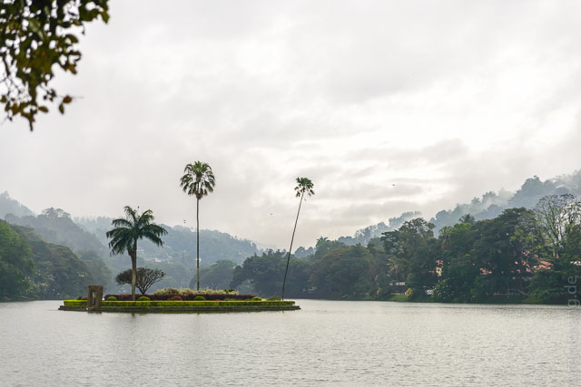
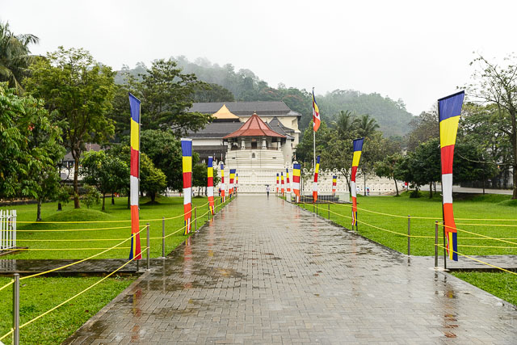
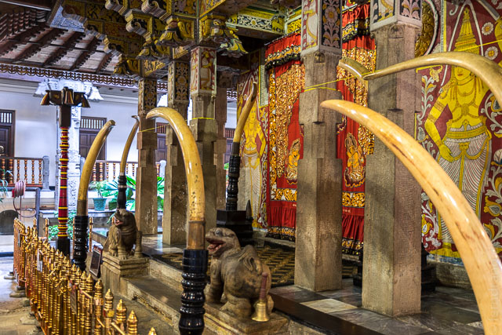
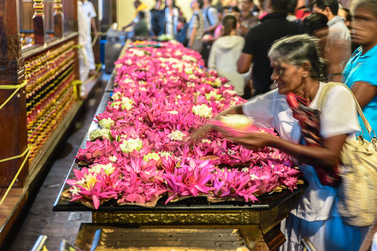

Von Dambulla ist es nicht mehr weit ins südlicher gelegene Kandy. Den Bus konnten wir komfortabel vor unserer Unterkunft anhalten, weil ja sowieso alles an derselben Straße liegt. Natürlich hat es geregnet, aber während sich der Bus die Berge hinauf und hinunter geschnauft hat, ist es immer schlimmer geworden.
In Kandy sind wir kurz am schön angelegten Stadtsee vorbeigefahren, um dann im verdreckten Chaos rund um Bahnhof und Busbahnhof steckenzubleiben. Letzterer heißt "Good Shephard" – doch besonders gut geleitet wirkt hier nichts. Wir waren nicht sicher, ob der Bus gegen die Fahrtrichtung fuhr oder alle anderen. Bei der anschließenden Rikschafahrt aus dem Gewirr von Autos, Bussen und Regenschirmen waren wir uns dessen sicher.
Das "Mango Garden" liegt südlich des Sees am Hang und ist ein gutes, einfaches Guesthouse. Bei Dauerregen haben wir uns zur Stadtbesichtigung aufgemacht. Dazu mussten wir den kleinen See umrunden, der das Zentrum der Stadt bildet, was bei schönem Wetter sicher sehr ansprechend wäre. Die grünen Hänge rund herum scheinen alle auf das super heilige Zahn-Heiligtum zu blicken. Im Innenhof der Festung eingebettet liegt eine große Schreinkammer mit der berühmten Zahnreliquie Buddhas. Die Kammer ruht unter drei Dächern (eins golden) und wirkt durch die Verzierung mit Stoßzähnen etwas skurril. Vielleicht haben sie das Zahn-Motto etwas übertrieben. Die Holzwände sind aber schön verziert und mit alten Säulen umgeben. Der Zahn scheint im oberen Geschoss der Kammer zu wohnen, denn die Einheimischen gehen alle auf die erste Etage der umgebenden Galerie um ihre Gebete und Opfergaben loszuwerden.
  Weil es nicht aufhört in Strömen zu regnen und die geplanten Ausflüge in die schöne Umgebung Kandys dadurch buchstäblich ins Wasser fallen, haben wir uns für den schnellen Rückzug entschlossen. Leider hat der unerquickliche Spaziergang zurück zum Bahnhof nur die Information ergeben, dass es keine reservierbaren Plätze mehr im Zug nach Colombo gibt. Wir haben uns mit einem leckeren Abendessen im "Empire Cafe" getröstet, dem ersten wirklich durchgestylten Geschäft, das wir hier gesehen haben.